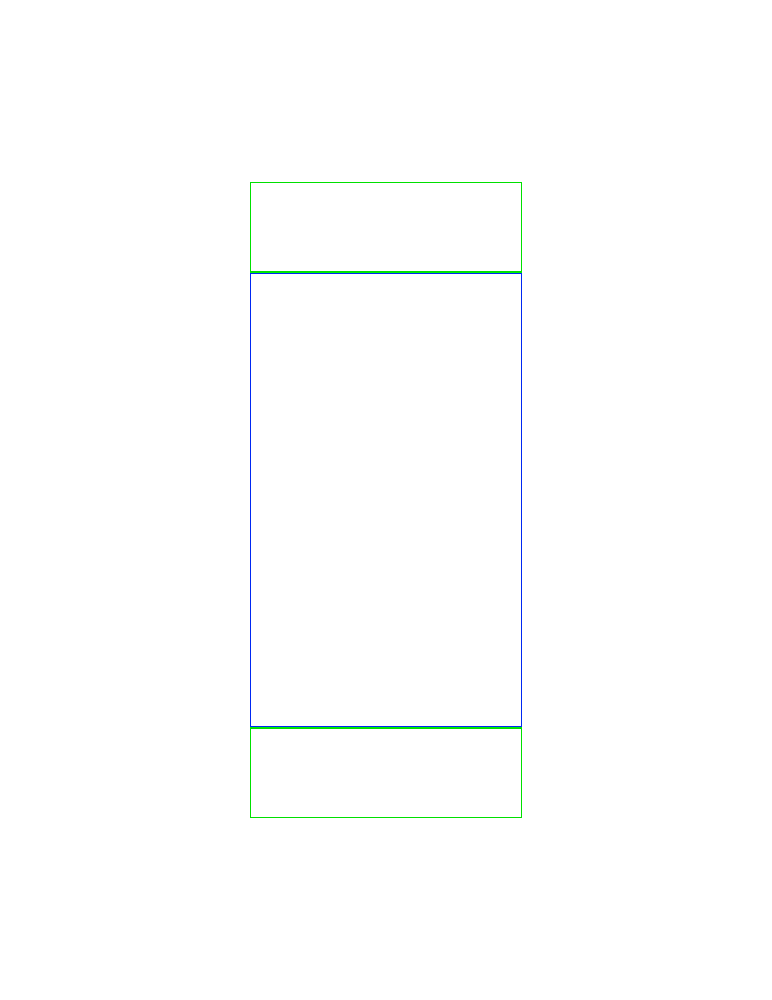
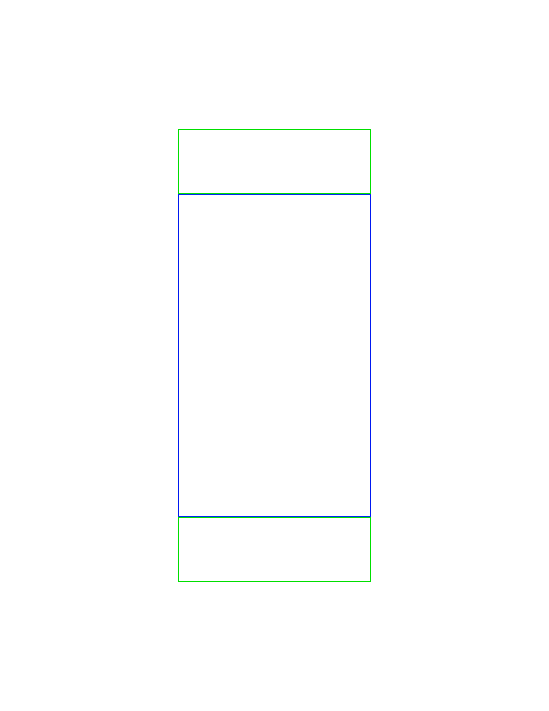

Instructions
1. Open XD
2. Create a standard artboard 8.5” wide 11” tall
3. Save file as lastname_firstname
4. Draw a rectangle 3” wide, 5” high
5. Make the rectangle’s outline color blue
6. Create two smaller rectangles, 3” wide by 1” tall with green outline
7. Orient rectangles so they are touching the blue rectangle on the top and bottom
8. Sides should be flush
9. Final drawing should have a total width of 3” and total height of 7”
10. Export file in .png format
11. Send final .png image in group email for evaluation/coding
Images
 
